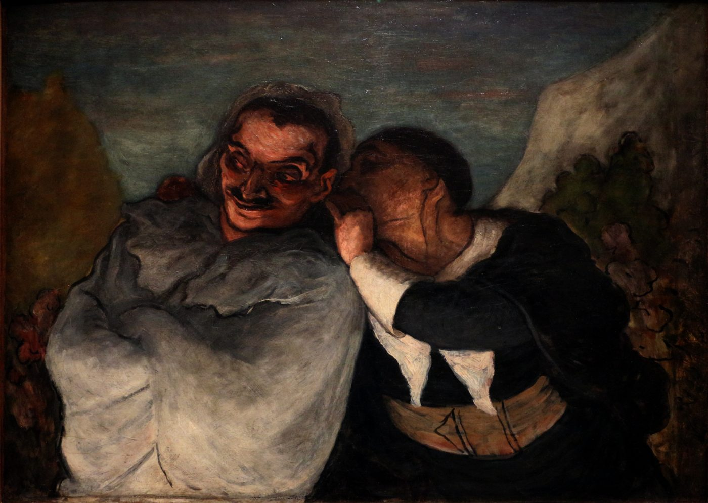
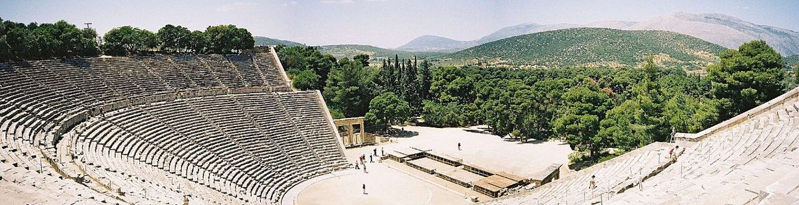
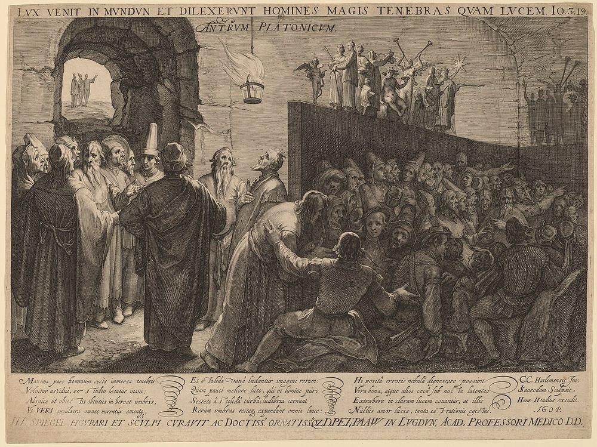
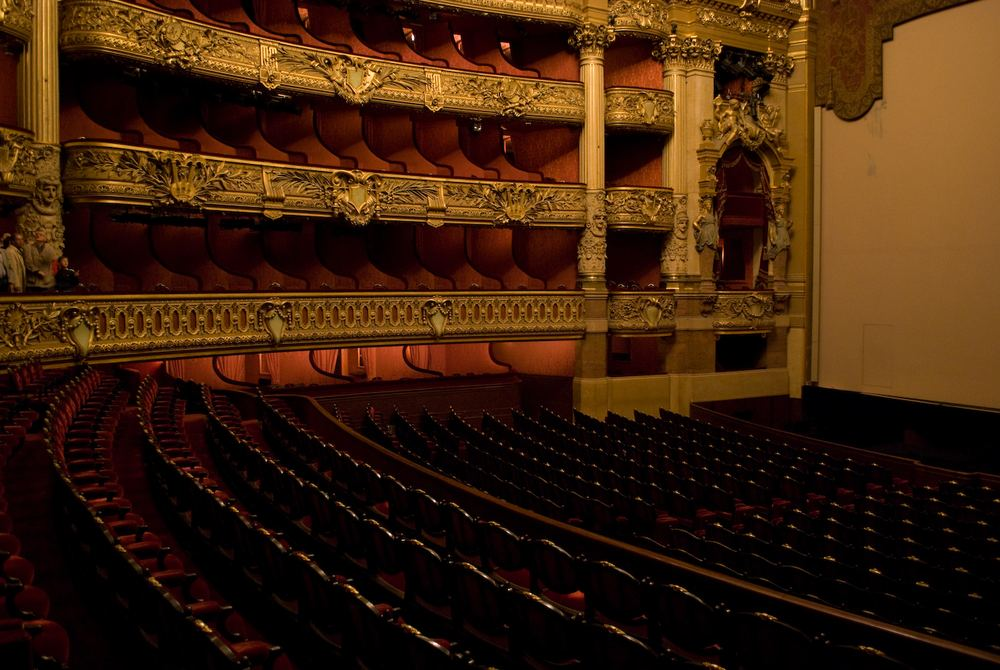
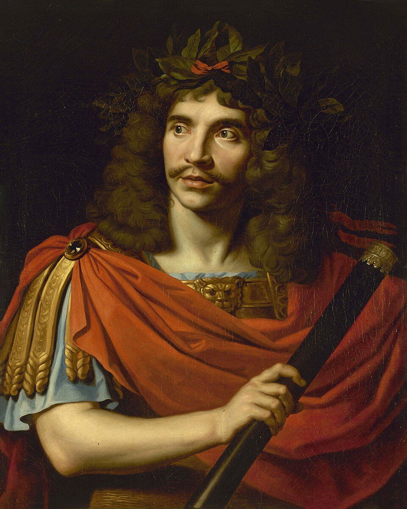
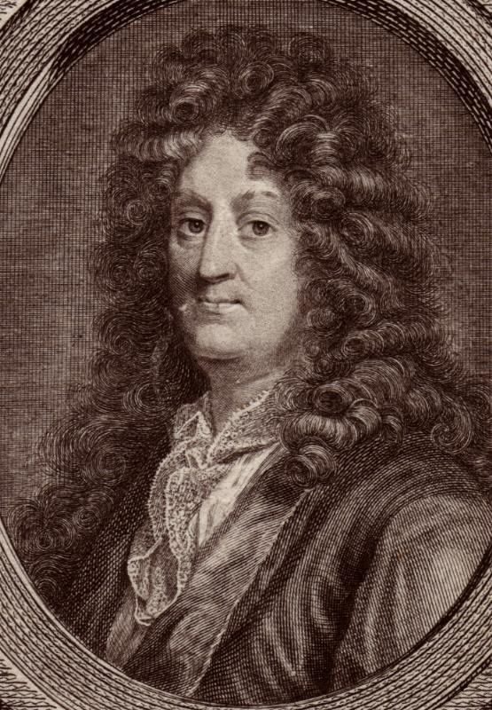
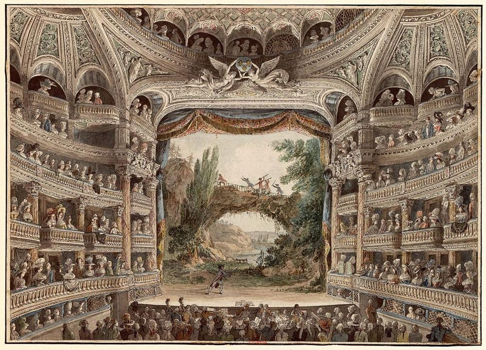

Lever de rideau : entrer au théâtre

Mise en situation
Lire, écrire, jouer
Écrire une scène de 10 à 15 répliques, avec un quiproquo et deux figures de style, puis la jouer avec un partenaire.
Molière, Yasmina Reza, Jean-Michel Ribes : trois auteurs que parfois trois siècles séparent, et dont les mondes ne se ressemblent guère. Chez Molière, on rit d'un avare, d'un hypocrite ou d'un faux savant. Chez Yasmina Reza, trois amis se déchirent pour un tableau tout blanc. Chez Jean-Michel Ribes, les situations les plus banales glissent vers l'absurde, si bien qu'on ne sait plus s'il faut rire ou s'inquiéter. Ces pièces vous dérouteront peut-être, et c'est très bien ainsi, car le théâtre aime bousculer ceux qui le regardent.
D'un auteur à l'autre, pourtant, les règles du jeu restent les mêmes. Il y a des personnages qui parlent, un conflit qui monte, un espace, la scène, et un public qui écoute. Les répliques, les didascalies, le monologue, l'aparté ou le coup de théâtre traversent les siècles, et celui qui les connaît possède les clés de n'importe quelle pièce, ancienne ou récente.
Cette histoire commence en Grèce, il y a plus de deux mille cinq cents ans. Avec Eschyle, les citoyens d'Athènes se rassemblaient pour voir des héros affronter les dieux, la loi et leur propre destin. Platon, lui, se méfiait du théâtre, qu'il croyait capable de manipuler les foules. La question n'a pas vieilli : les images, les publicités et les réseaux cherchent eux aussi à nous faire croire et réagir. Le théâtre, au contraire, montre la manipulation en pleine lumière et nous apprend à la reconnaître.
Au cœur de bien des pièces se trouve une règle, celle du groupe, de la famille ou de la société. Faut-il s'y plier, même quand elle fait souffrir, et que coûte la désobéissance ? Les héroïnes tragiques paient souvent ce prix très cher. La comédie, de son côté, nous tend un miroir où l'on reconnaît nos contradictions, nos petites lâchetés et nos colères, et le rire qu'elle provoque est déjà une manière de réfléchir.
Enfin, le théâtre n'est pas fait pour dormir dans les livres. Il se joue chaque soir à Paris, à la Comédie-Française, à l'Odéon ou au Châtelet, mais aussi à Bordeaux et dans bien d'autres villes. Forme ancienne et pourtant toujours neuve, il s'adresse directement au public et réveille les consciences.
Dans cette séquence, vous allez lire, dire et jouer. Vous découvrirez les codes du théâtre, vous mettrez des scènes en jeu et vous écrirez à votre tour. Peut-être aurez-vous envie, à la fin, de pousser la porte d'une vraie salle, de vous asseoir dans le noir et d'attendre que le rideau se lève.
Télécharger la séquence (version élève)
Télécharger la version prof (réponses et spirales remplies)
Télécharger la version dys
- Thème et objet d'étude
- « Dire et se faire entendre : la parole, le théâtre, l'éloquence » (programme de français de la voie professionnelle). Entrer au théâtre par trois époques : Molière, Les Fourberies de Scapin (1671) ; Yasmina Reza, « Art » (1994) ; Jean-Michel Ribes, Théâtre sans animaux (2001).
- Niveau
- Français · bac pro, lycée professionnel, en priorité en Seconde professionnelle. Onze leçons.
- Problématique
- Pourquoi le théâtre nous parle-t-il encore, de Molière à aujourd'hui, et comment une parole jouée agit-elle sur ceux qui la regardent ?
- Objectifs
- Lire un texte de théâtre et en comprendre le fonctionnement : répliques, didascalies, double énonciation. Maîtriser le vocabulaire du théâtre, repérer les figures de style et les formes du comique. Dire une réplique, puis jouer une scène devant la classe : voix, regard, gestes. Écrire une scène de 10 à 15 répliques avec didascalies et quiproquo. Connaître les lieux et les métiers du théâtre, et préparer une sortie.
- Ancrage culturel
- Le théâtre grec (Eschyle, Platon, Aristote et la catharsis), le théâtre classique du XVIIe siècle (Corneille, Molière, Racine, la Comédie-Française), le théâtre contemporain (Yasmina Reza, Jean-Michel Ribes et le Théâtre du Rond-Point), le festival d'Avignon et les salles de Paris et de Bordeaux. Œuvre d'ouverture : Honoré Daumier, Crispin et Scapin, vers 1864, musée d'Orsay.
L'élève ne peut pas venir en classe ou est hospitalisé
L'élève lit l'introduction, puis suit à son rythme les leçons 1, 2, 3 et 5 (Scapin). Les quiz de chaque leçon se corrigent seuls. Il applique la spirale de Gorse au document de deux leçons de son choix et envoie ses réponses par l'ENT.
Pour l'écriture, il fait les ateliers 1 et 2 de la leçon 9 et les envoie par l'ENT. Le jeu (leçon 10) se fait par un enregistrement audio, ou par un échange au téléphone ou en visioconférence avec l'enseignante.
Évaluation adaptée : une scène de 8 à 10 répliques, avec deux didascalies et un quiproquo, lue à voix haute et enregistrée. Version courte (fatigue) : leçons 1 et 5, leurs quiz, et une spirale de Gorse.
Leçon 1. Pourquoi le théâtre classique nous parle encore
Soyons honnêtes : des princes et des reines qui souffrent en alexandrins, des passions poussées jusqu'à la mort, des vers de douze syllabes, tout cela semble loin, très loin de nous. Et pourtant, si l'on écarte les perruques et les chandelles, on découvre des questions que chacun de vous connaît très bien.
Aux origines : Athènes
Le théâtre naît en Grèce, il y a vingt-cinq siècles. À Athènes, toute la cité se rassemble en plein air, sur les gradins du théâtre de Dionysos, pour voir des tragédies. Ce n'est pas un simple divertissement : c'est une affaire de citoyens.
En 472 avant J.-C., Eschyle fait jouer Les Perses, la plus ancienne tragédie qui nous soit parvenue. Il montre la défaite de l'ennemi perse du côté des vaincus, et oblige les Athéniens vainqueurs à éprouver de la pitié pour ceux qu'ils ont battus. Voilà déjà l'essence du théâtre : se mettre à la place de l'autre.

Socrate et la caverne
Le philosophe Platon, qui fait parler son maître Socrate, se méfie des poètes et des acteurs. Ils imitent, dit-il, et l'imitation trouble l'âme : elle fait pleurer et rire sans passer par la raison. Dans La République, il va jusqu'à les chasser de la cité idéale.
Son image la plus célèbre ressemble étrangement à une salle de spectacle : des prisonniers enchaînés au fond d'une caverne prennent pour la réalité des ombres projetées sur un mur. Celui qui se libère découvre qu'on l'a trompé. C'est l'allégorie de la caverne.

Aristote, l'élève de Platon, lui répond : en éprouvant la terreur et la pitié devant la scène, le spectateur s'en purifie. C'est la catharsis. Depuis, le débat n'a jamais cessé : le théâtre nous trompe-t-il, ou nous apprend-il à voir clair ?
La règle et le prix à payer
Le héros classique est toujours pris entre ce qu'il désire et ce que la loi lui impose. Rodrigue aime Chimène, mais l'honneur de son père l'oblige à tuer le père de celle qu'il aime. Titus aime Bérénice, mais Rome refuse une reine étrangère : il doit la renvoyer. Phèdre aime celui qu'elle n'a pas le droit d'aimer.
Se soumettre fait souffrir. Désobéir peut coûter la vie. C'est le sort des grandes héroïnes tragiques, depuis Antigone qui ose dire non au roi et qu'on enferme vivante dans un tombeau.
La loi du groupe, aujourd'hui
Cette loi, vous la connaissez. Celle de la famille, du quartier, de la classe, des réseaux sociaux. Faut-il suivre le groupe ou s'en écarter ? Que risque-t-on à dire non ? La tragédie ne donne pas de réponse facile : elle montre le prix de chaque choix.
Un miroir qui nous fait rire de nous
La comédie, elle, grossit nos défauts jusqu'au ridicule. L'avare qui aime son argent plus que ses enfants, le bourgeois qui veut paraître ce qu'il n'est pas, le père aveuglé par un faux dévot. On rit d'eux, puis on comprend qu'on rit de nos contradictions, de notre médiocrité, de notre facilité à nous laisser tromper.
Le grand art de la manipulation
Scapin invente un enlèvement sur une galère pour soutirer de l'argent. Tartuffe joue la dévotion pour s'emparer d'une maison et d'une famille. Le théâtre classique est rempli de manipulateurs et de victimes.
Mais le théâtre nous manipule aussi, nous, spectateurs. Il nous fait rire, pleurer, trembler au moment exact où il le décide. C'est un immense exercice de manipulation dont nous sommes l'objet, et nous l'acceptons volontiers.
Or la manipulation est partout aujourd'hui : publicité, influenceurs, fausses informations, arnaques par message. Le faux texto « Maman, j'ai perdu mon téléphone, envoie-moi de l'argent » est une ruse de Scapin. Lire et jouer le théâtre classique, c'est apprendre à voir les ficelles, comme le prisonnier qui sort de la caverne.
Un lieu, une ambiance
Enfin, le théâtre est un lieu à part. On entre dans une salle de velours rouge et d'or, la lumière baisse, le rideau se lève, le décor nous transporte ailleurs. Les costumes font partie du voyage : les personnages habitent leurs costumes, et les costumes habitent les personnages. La fusion est si forte que l’un ne se comprend plus sans l’autre. Rien ne remplace ce moment où la salle entière retient son souffle.

Questions pour entrer dans le sujet
Cite une règle de groupe que tu respectes même si elle te déplaît.
Réponse, Version prof
Réponse libre : une règle familiale, une règle entre amis, une habitude de la classe. Demande-toi ensuite ce qui se passerait si tu ne la respectais plus. C'est exactement la question que posent les tragédies.
Quelle différence entre un héros tragique et un personnage de comédie ?
Réponse, Version prof
Le héros tragique est écrasé par un choix impossible : on a pitié de lui. Le personnage de comédie est prisonnier de son défaut : on rit de lui. Mais dans les deux cas, c'est nous que le théâtre regarde.
En quoi la caverne de Platon ressemble-t-elle à nos écrans ?
Réponse, Version prof
Les prisonniers regardent des images projetées et les prennent pour la vérité. Devant un fil d'actualité ou une vidéo truquée, nous risquons la même erreur. Le théâtre, lui, avoue qu'il est une illusion : c'est ce qui nous apprend à la reconnaître.
Donne un exemple de manipulation que tu as vu ou subi.
Réponse, Version prof
Une publicité qui promet trop, un message d'arnaque, une rumeur sur les réseaux, quelqu'un qui flatte pour obtenir un service. Repère la technique : mensonge, flatterie, peur, urgence. Scapin les utilise toutes.
Le décor : Paris en 1660
Pas d'électricité : la scène est éclairée par des chandelles qu'on remplace pendant les entractes. Des spectateurs riches sont assis sur la scène, à côté des acteurs. Au parterre, le public reste debout, crie, siffle, applaudit. Le roi Louis XIV adore le théâtre et protège les troupes.
Trois auteurs dominent ce siècle : Corneille, Molière et Racine. Ce qu'ils ont inventé, on le retrouve encore aujourd'hui chez Yasmina Reza ou Jean-Michel Ribes. Les univers changent, parfois ils déroutent, mais les codes du théâtre restent les mêmes.


Portraits : Wikimedia Commons, domaine public.
Le défi : sept épreuves pour entrer dans la troupe du roi
Chaque bonne réponse rapporte un écu. Objectif : 15 écus pour entrer dans la troupe du roi.
Épreuve 1. Qui est qui ?
Trois auteurs, trois spécialités. Retrouve qui a écrit quoi.
Épreuve 2. Rire ou pleurer ?
Au XVIIe siècle, on ne mélange pas les genres. La tragédie fait peur et pitié, la comédie fait rire pour corriger les défauts. Classe chaque situation.
Le mot savant à retenir
La tragédie provoque la catharsis : en voyant les passions détruire les héros, le spectateur se libère des siennes. La comédie, elle, suit une devise latine : castigat ridendo mores, « elle corrige les mœurs en riant ».
Épreuve 3. Les trois unités
Le poète Boileau a résumé la grande règle du théâtre classique en deux vers :
« Qu'en un lieu, qu'en un jour, un seul fait accompli
Tienne jusqu'à la fin le théâtre rempli. »Boileau, L'Art poétique, 1674
Quelles sont les trois unités ?
Réponse, Version prof
Unité de lieu : un seul décor. Unité de temps : l'histoire tient en une journée. Unité d'action : une seule intrigue principale.
Retenir : la bienséance
On ne montre pas sur scène ce qui pourrait choquer : pas de mort, pas de sang, pas de combat. Un personnage vient raconter ce qui s'est passé. C'est le récit, très fréquent chez Racine.
Retenir : la vraisemblance
L'histoire doit paraître possible au public, même si elle est inventée. Le spectateur doit pouvoir y croire.
Épreuve 4. Compter jusqu'à douze
La tragédie s'écrit en alexandrins : des vers de douze syllabes. Touche chaque syllabe que tu prononces. Attention : un « e » devant une voyelle ne se prononce pas.
« Je suis jeune, il est vrai ; mais aux âmes bien nées »Corneille, Le Cid
Syllabes comptées : 0 / 12
Vérifie ton décompte avec le professeur.
Réponse, Version prof
Je / suis / jeu / n(e)-il / est / vrai / mais / aux / â / mes / bien / nées. Douze syllabes. Le « e » de « jeune » s'efface devant « il » : c'est l'élision.
À l'oral, on marque une petite pause au milieu, après la sixième syllabe : c'est la césure. Dis le vers en tapant doucement le rythme sur la table.
Épreuve 5. Qui a dit ça ?
Des répliques devenues célèbres. Associe chacune à son auteur.
Épreuve 6. La superstition du jaune
Le 17 février 1673, Molière joue Argan dans Le Malade imaginaire. Il est très malade, mais il refuse d'annuler pour ne pas priver ses comédiens de leur salaire. Il est pris d'un malaise sur scène et meurt quelques heures plus tard.
Pourquoi les comédiens évitent-ils le jaune ?
Réponse, Version prof
Selon la légende, Molière portait un costume jaune ce soir-là. Depuis, beaucoup d'acteurs refusent de porter du jaune sur scène. Autres superstitions : on ne dit pas « corde » dans un théâtre, et on ne souhaite pas « bonne chance » mais « merde ».
Pourquoi dit-on « la Maison de Molière » ?
Réponse, Version prof
Après sa mort, sa troupe a fusionné avec d'autres. En 1680, Louis XIV crée ainsi la Comédie-Française, qui joue encore ses pièces aujourd'hui.
Épreuve 7. Le défi final : sur scène !
Choisis une réplique et dis-la devant la classe, debout, en respectant le rythme. Le public vote : tragique ou comique ?
« Va, je ne te hais point. »Corneille, Le Cid : Chimène à Rodrigue
« Je l'aimais inconstant, qu'aurais-je fait fidèle ? »Racine, Andromaque : Hermione
« Il faut manger pour vivre, et non pas vivre pour manger. »Molière, L'Avare
Conseils pour réussir
Regarde un point fixe au fond de la salle. Respire avant de parler. Prononce toutes les syllabes. Garde un silence d'une seconde après la réplique : c'est ce silence qui fait effet.
Spirale de Gorse
Méthode conçue par Madame Carole Paoli Pompougnac. Le nom rend hommage à sa grand-mère par alliance, Madame Armandine Gorse, avec un S. On gravit un texte, un audio ou une image comme une pente : chaque tour est une prise plus haute. On part de ce qui saute aux yeux, puis l'attention se resserre, jusqu'à la pointe, le sommet où l'essentiel se laisse voir. Quatre tours, puis la pointe. Les réponses détaillées restent en Version prof.
Dans cette leçon, la spirale s'applique à la gravure de Jan Saenredam, L'allégorie de la caverne (1604).

Je remarque
Ce qui saute aux yeux, la première impression.
Je remarque… / Il s'agit de…
Je repère
Un détail, un passage, un élément plus net.
Je repère… / Le mot clé est…
Je comprends
Ce que ces éléments permettent de comprendre.
Cela montre que… / Ils ont en commun…
J'anticipe
La visée du texte, ce qu'il faut en faire.
Le texte veut que je… / J'anticipe…
Je trouve le sens
La pointe, le point final : l'essentiel que l'on peut défendre, et sa limite. Ce point final cadre et recentre la démarche. Il évite le hors-sujet et les conclusions hâtives qui fausseraient l'analyse du texte. On peut finir par une brève ouverture sur un autre débat.
Le sens, c'est… / Je reste dans le texte : … / Je me recentre sur… / Au-delà, d'autres questions peuvent surgir et ouvrir de nouvelles pistes.
Spirale de Gorse · Version dys
Applique la spirale à la gravure de la caverne. Écris une phrase courte à chaque étape.
Je remarque
Je remarque…
Je repère
Je repère…
Je comprends
Cela montre que…
J'anticipe
Le texte veut que je…
Je trouve le sens
Le sens, c'est…
Spirale de Gorse remplie · Version prof
1. Je remarque : des hommes assis dans le noir, au fond d'une grotte, tournés vers un mur où passent des ombres ; tout en haut, une ouverture vers la lumière.
2. Je repère : les prisonniers ne voient que des ombres ; derrière eux, un feu et des silhouettes qui portent des objets ; un homme sort vers la lumière.
3. Je comprends : les prisonniers prennent les ombres pour la réalité : on peut nous faire croire à une illusion, comme dans une salle de spectacle.
4. J'anticipe : la gravure veut que je me demande qui fabrique les images que je regarde, et comment je peux m'en libérer.
5. Je trouve le sens : le sens, c'est que l'illusion trompe tant qu'on ne la reconnaît pas. Je reste dans le document : Platon ne parle pas du théâtre de Molière. Au-delà, d'autres questions peuvent surgir : nos écrans sont-ils une nouvelle caverne ?
Leçon 2. Découvrir le théâtre
La scène vue du dessus
Sur ce plan, on est du point de vue du public, qui regarde la scène depuis le bas.
Où est la cour ? Où est le jardin ?
Réponse, Version prof
Pour le public, le jardin est à gauche et la cour à droite. Pour l'acteur qui regarde la salle, c'est l'inverse. Les deux mots viennent des Tuileries : la cour du palais d'un côté, le jardin de l'autre.
Astuce pour retenir : « Jésus-Christ », J à gauche, C à droite, vu depuis la salle.
Questions de compréhension
Un texte de théâtre, qu'est-ce qui le distingue d'un roman ?
Réponse, Version prof
Il est écrit pour être joué devant un public. Il contient surtout des répliques (ce que disent les personnages) et des didascalies (les indications de jeu, de décor, de ton, souvent en italique).
Quels sont les grands genres théâtraux ?
Réponse, Version prof
Tragédie : destin fatal, personnages nobles, fin malheureuse.
Comédie : faire rire, souvent pour corriger les défauts des hommes.
Drame : mélange de grave et de comique, personnages divers.
Farce : rire franc, coups de bâton et situations absurdes.
Pourquoi dit-on qu'au théâtre il y a une « double énonciation » ?
Réponse, Version prof
Un personnage parle à un autre personnage, mais l'auteur s'adresse en même temps au public. Le spectateur sait parfois plus de choses que les personnages : c'est ce qui crée le rire ou la tension.
Que fait l'auteur quand il écrit « Il sort en claquant la porte » ?
Réponse, Version prof
C'est une didascalie : elle dit comment jouer. Elle ne se prononce pas à voix haute, elle se joue.
Un extrait pour entrer dans le jeu
« Que diable allait-il faire dans cette galère ? »Molière, Les Fourberies de Scapin
Dis cette phrase de trois façons différentes. Qu'est-ce qui change ?
Réponse, Version prof
Colère, ironie, désespoir. Le sens des mots reste le même, mais le ton, le rythme et le regard changent tout. C'est le travail de l'acteur.
Spirale de Gorse
Méthode conçue par Madame Carole Paoli Pompougnac. Le nom rend hommage à sa grand-mère par alliance, Madame Armandine Gorse, avec un S. On gravit un texte, un audio ou une image comme une pente : chaque tour est une prise plus haute. On part de ce qui saute aux yeux, puis l'attention se resserre, jusqu'à la pointe, le sommet où l'essentiel se laisse voir. Quatre tours, puis la pointe. Les réponses détaillées restent en Version prof.
Dans cette leçon, la spirale s'applique à la réplique « Que diable allait-il faire dans cette galère ? » (Molière, Les Fourberies de Scapin).
Je remarque
Ce qui saute aux yeux, la première impression.
Je remarque… / Il s'agit de…
Je repère
Un détail, un passage, un élément plus net.
Je repère… / Le mot clé est…
Je comprends
Ce que ces éléments permettent de comprendre.
Cela montre que… / Ils ont en commun…
J'anticipe
La visée du texte, ce qu'il faut en faire.
Le texte veut que je… / J'anticipe…
Je trouve le sens
La pointe, le point final : l'essentiel que l'on peut défendre, et sa limite. Ce point final cadre et recentre la démarche. Il évite le hors-sujet et les conclusions hâtives qui fausseraient l'analyse du texte. On peut finir par une brève ouverture sur un autre débat.
Le sens, c'est… / Je reste dans le texte : … / Je me recentre sur… / Au-delà, d'autres questions peuvent surgir et ouvrir de nouvelles pistes.
Spirale de Gorse · Version dys
Applique la spirale à la réplique de Géronte. Écris une phrase courte à chaque étape.
Je remarque
Je remarque…
Je repère
Je repère…
Je comprends
Cela montre que…
J'anticipe
Le texte veut que je…
Je trouve le sens
Le sens, c'est…
Spirale de Gorse remplie · Version prof
1. Je remarque : une question, avec un juron (« diable »), qui sonne comme une plainte.
2. Je repère : le mot « galère » et le ton de reproche : Géronte parle de son fils comme d'un fautif.
3. Je comprends : Géronte se lamente au lieu d'agir : il cherche un coupable pour ne pas payer.
4. J'anticipe : la réplique est faite pour être dite et répétée : elle annonce un comique de répétition.
5. Je trouve le sens : le sens, c'est qu'une phrase de théâtre change de sens selon le ton. Je reste dans le texte : la réplique seule ne dit pas que Scapin ment. Au-delà, d'autres questions peuvent surgir : pourquoi l'expression « quelle galère » est-elle restée dans la langue ?
Leçon 3. Le vocabulaire du théâtre
Fiches à ouvrir
Acte, scène, réplique
L'acte est une grande partie de la pièce. La scène change quand un personnage entre ou sort. La réplique est ce que dit un personnage avant qu'un autre ne réponde.
Monologue, tirade, aparté
Monologue : un personnage seul parle (à lui-même ou au public).
Tirade : longue réplique, en présence d'autres personnages.
Aparté : phrase que le personnage dit « à part », que les autres sont censés ne pas entendre.
Stichomythie
Échange de répliques très courtes, vives, qui se répondent comme un match de ping-pong. Elle donne du rythme à un affrontement.
Quiproquo
Malentendu : un personnage croit qu'on parle d'une chose alors qu'on parle d'une autre. Le public, lui, comprend tout.
Exposition, nœud, dénouement, coup de théâtre
Exposition : on présente lieu, époque, personnages.
Nœud : le problème se complique.
Dénouement : le problème se règle.
Coup de théâtre : retournement inattendu.
Quiz du vocabulaire
Spirale de Gorse
Méthode conçue par Madame Carole Paoli Pompougnac. Le nom rend hommage à sa grand-mère par alliance, Madame Armandine Gorse, avec un S. On gravit un texte, un audio ou une image comme une pente : chaque tour est une prise plus haute. On part de ce qui saute aux yeux, puis l'attention se resserre, jusqu'à la pointe, le sommet où l'essentiel se laisse voir. Quatre tours, puis la pointe. Les réponses détaillées restent en Version prof.
Dans cette leçon, la spirale s'applique à le dessin du rideau, de la scène et du trou du souffleur.
Je remarque
Ce qui saute aux yeux, la première impression.
Je remarque… / Il s'agit de…
Je repère
Un détail, un passage, un élément plus net.
Je repère… / Le mot clé est…
Je comprends
Ce que ces éléments permettent de comprendre.
Cela montre que… / Ils ont en commun…
J'anticipe
La visée du texte, ce qu'il faut en faire.
Le texte veut que je… / J'anticipe…
Je trouve le sens
La pointe, le point final : l'essentiel que l'on peut défendre, et sa limite. Ce point final cadre et recentre la démarche. Il évite le hors-sujet et les conclusions hâtives qui fausseraient l'analyse du texte. On peut finir par une brève ouverture sur un autre débat.
Le sens, c'est… / Je reste dans le texte : … / Je me recentre sur… / Au-delà, d'autres questions peuvent surgir et ouvrir de nouvelles pistes.
Spirale de Gorse · Version dys
Applique la spirale à le dessin de la scène. Écris une phrase courte à chaque étape.
Je remarque
Je remarque…
Je repère
Je repère…
Je comprends
Cela montre que…
J'anticipe
Le texte veut que je…
Je trouve le sens
Le sens, c'est…
Spirale de Gorse remplie · Version prof
1. Je remarque : un rideau rouge ouvert, une scène, un petit trou au bord du plateau.
2. Je repère : le trou du souffleur, au milieu, tout près du public.
3. Je comprends : au théâtre, chaque partie de la salle a un nom et une fonction : le souffleur aide l'acteur qui oublie son texte.
4. J'anticipe : le dessin veut que j'apprenne les mots exacts pour parler d'une pièce et d'une mise en scène.
5. Je trouve le sens : le sens, c'est que le théâtre a son propre vocabulaire, comme un métier. Je me recentre sur les mots du dessin : rideau, scène, souffleur. Au-delà, d'autres questions peuvent surgir : quels mots du théâtre utilise-t-on dans la vie de tous les jours (coup de théâtre, en coulisses) ?
Leçon 4. Les figures de style au théâtre
L'hyperbole (exagération)
Elle grossit la réalité pour faire rire ou impressionner.
« C'est un roc ! c'est un pic ! c'est un cap ! »Rostand, Cyrano de Bergerac
Effet : comique, spectaculaire. Au jeu : voix qui monte, gestes larges.
L'antithèse (opposition)
Elle rapproche deux idées contraires dans la même phrase.
« Ver de terre amoureux d'une étoile »Victor Hugo, Ruy Blas
Le valet Ruy Blas se compare à un ver de terre, la reine à une étoile : le plus bas et le plus haut.
Effet : montre un conflit ou un écart impossible. Au jeu : changer de ton entre les deux idées.
La litote (dire peu pour suggérer beaucoup)
« Va, je ne te hais point. »Corneille, Le Cid
Chimène veut dire « je t'aime », mais elle ne peut pas l'avouer.
Effet : émotion retenue, pudeur. Au jeu : voix basse, silence avant la réplique.
L'ironie
On dit le contraire de ce qu'on pense. Exemple dans un atelier : « Bravo, quel beau travail ! » devant une pièce ratée.
Effet : critique ou moquerie. Au jeu : ton trop gentil, sourcil levé.
La répétition et l'anaphore
On répète un mot ou un début de phrase. Dans L'Avare de Molière, Harpagon, obsédé par l'argent, répète « Sans dot ! » à chaque objection.
Effet : montre une obsession, crée un comique de répétition.
La gradation et l'accumulation
Gradation : des mots de plus en plus forts. Accumulation : une longue liste. Exemple : « Il est en retard, il est sale, il est bruyant, il est insupportable ! »
Effet : la colère monte. Au jeu : on accélère et on hausse la voix.
L'euphémisme et la périphrase
Euphémisme : adoucir une réalité dure (« il nous a quittés » pour « il est mort »).
Périphrase : remplacer un mot par une expression (« la Ville Lumière » pour Paris, « le roi des animaux » pour le lion).
Effet : l'euphémisme ménage celui qui écoute ; la périphrase met en valeur ou crée un effet comique quand elle devient trop savante. Au jeu : ton délicat ou faussement solennel.
Les formes du comique
| Comique | Comment ça marche | Exemple à jouer |
|---|---|---|
| de gestes | corps, chutes, coups, grimaces | glisser sur une peau de banane |
| de mots | jeux de mots, déformations, jargon | le patient qui parle de son « infractus » au lieu de son infarctus |
| de situation | quiproquo, cache-cache, erreur | deux personnes parlent de choses différentes |
| de caractère | un défaut poussé à l'extrême | l'avare, le menteur, le vaniteux |
| de répétition | même geste ou même phrase qui revient | le même refrain à chaque entrée |
Entraîne-toi
Spirale de Gorse
Méthode conçue par Madame Carole Paoli Pompougnac. Le nom rend hommage à sa grand-mère par alliance, Madame Armandine Gorse, avec un S. On gravit un texte, un audio ou une image comme une pente : chaque tour est une prise plus haute. On part de ce qui saute aux yeux, puis l'attention se resserre, jusqu'à la pointe, le sommet où l'essentiel se laisse voir. Quatre tours, puis la pointe. Les réponses détaillées restent en Version prof.
Dans cette leçon, la spirale s'applique à la réplique « Va, je ne te hais point. » (Corneille, Le Cid).
Je remarque
Ce qui saute aux yeux, la première impression.
Je remarque… / Il s'agit de…
Je repère
Un détail, un passage, un élément plus net.
Je repère… / Le mot clé est…
Je comprends
Ce que ces éléments permettent de comprendre.
Cela montre que… / Ils ont en commun…
J'anticipe
La visée du texte, ce qu'il faut en faire.
Le texte veut que je… / J'anticipe…
Je trouve le sens
La pointe, le point final : l'essentiel que l'on peut défendre, et sa limite. Ce point final cadre et recentre la démarche. Il évite le hors-sujet et les conclusions hâtives qui fausseraient l'analyse du texte. On peut finir par une brève ouverture sur un autre débat.
Le sens, c'est… / Je reste dans le texte : … / Je me recentre sur… / Au-delà, d'autres questions peuvent surgir et ouvrir de nouvelles pistes.
Spirale de Gorse · Version dys
Applique la spirale à la réplique de Chimène. Écris une phrase courte à chaque étape.
Je remarque
Je remarque…
Je repère
Je repère…
Je comprends
Cela montre que…
J'anticipe
Le texte veut que je…
Je trouve le sens
Le sens, c'est…
Spirale de Gorse remplie · Version prof
1. Je remarque : une phrase très courte, à la forme négative, adressée à quelqu'un (« Va »).
2. Je repère : la négation « ne… point » et le verbe « haïr ».
3. Je comprends : Chimène dit le moins pour faire entendre le plus : « je ne te hais point » veut dire « je t'aime ». C'est une litote.
4. J'anticipe : la réplique veut que le public devine un aveu que la bienséance interdit de dire clairement.
5. Je trouve le sens : le sens, c'est qu'une figure de style permet de dire un sentiment interdit. Je reste dans le texte : Chimène n'emploie jamais le mot « aimer ». Au-delà, d'autres questions peuvent surgir : pourquoi dit-on parfois moins que ce qu'on pense ?
Leçon 5. Une pièce classique : Les Fourberies de Scapin
Fiche d'identité
Auteur : Molière, 1671.
Genre : comédie en trois actes, en prose, avec beaucoup de farce.
Personnages : Scapin (valet de Léandre), Silvestre (valet d'Octave), les deux jeunes gens Octave et Léandre, leurs pères Argante et Géronte, deux jeunes filles, Hyacinte et Zerbinette.
L'histoire en trois temps
Acte I : le problème
Pendant l'absence de leurs pères, Octave et Léandre ont fait ce qu'ils voulaient : l'un s'est marié en secret, l'autre est amoureux d'une jeune fille que son père n'acceptera pas. Les pères rentrent. Panique. Octave supplie Scapin de le sauver ; Léandre viendra lui aussi demander son aide.
Acte II : les ruses
Scapin invente des histoires pour soutirer de l'argent aux deux pères. Dans la plus célèbre, il raconte à Géronte que son fils a été enlevé sur une galère et qu'il faut payer une rançon.
Acte III : la vengeance et la fin
Scapin règle ses comptes avec Géronte, puis tout s'éclaire : les deux jeunes filles se révèlent être des filles que les pères avaient perdues. Les mariages sont possibles. Scapin fait semblant d'être mourant pour obtenir le pardon.
Parcours de lecture : cinq scènes à lire et à jouer
1. Acte I, scène 2 : Scapin est appelé au secours
Questions. Qui demande de l'aide à qui ? Comment Scapin se fait-il prier ? Qu'est-ce que cela montre de son caractère ?
Réponses, Version prof
Réponses. Octave, mal pris, supplie le valet. Scapin se fait prier, flatter, presque implorer : il aime sentir qu'on a besoin de lui. C'est un homme fier de son talent.
2. La galère (acte II, scène 7)
Questions. Quelle histoire Scapin invente-t-il ? Quelle phrase revient comme un refrain ? Quel comique est utilisé ?
Réponses, Version prof
Réponses. Il invente un enlèvement sur une galère turque. Le refrain est « Que diable allait-il faire dans cette galère ? », que Géronte répète sans cesse. Comique de répétition et de caractère : l'avare pleure surtout pour son argent.
3. La scène du sac (acte III, scène 2)
Questions. Où Géronte se cache-t-il ? Que lui arrive-t-il ? Quel comique domine ?
Réponses, Version prof
Réponses. Scapin fait entrer Géronte dans un sac pour le cacher de prétendus ennemis, puis lui donne des coups de bâton en imitant plusieurs voix. Comique de gestes et de farce : tout passe par le corps et la voix.
4. Le récit de Zerbinette (acte III, scène 3)
Questions. Que raconte Zerbinette ? À qui ? Que sait le public que Zerbinette ne sait pas ?
Réponses, Version prof
Réponses. Elle raconte en riant la ruse de Scapin... à Géronte lui-même, sans savoir qui il est. Le public sait qu'il est la victime : c'est de l'ironie dramatique et un grand moment de comique de situation.
5. La fausse mort de Scapin (dénouement)
Questions. Pourquoi Scapin joue-t-il le mourant ? Que veut-il obtenir ? Que pensez-vous de cette fin ?
Réponses, Version prof
Réponses. Il joue la comédie pour obtenir le pardon de Géronte, qui cède. On peut débattre : le valet est-il puni, ou gagne-t-il ? Réponse libre, à justifier avec la pièce.
Pour débattre en classe
Scapin est-il un héros ou un menteur ?
Réponse, Version prof
Il ment et il trompe, mais il rend service à des jeunes gens et se venge de maîtres injustes. Chacun défend sa position avec un exemple pris dans la pièce.
Que dit la pièce de l'argent et du pouvoir ?
Réponse, Version prof
Les pères tiennent l'argent et décident de tout. Le valet, lui, n'a que sa ruse. Molière fait rire, mais il montre aussi des rapports de force.
Quiz sur la pièce
Spirale de Gorse
Méthode conçue par Madame Carole Paoli Pompougnac. Le nom rend hommage à sa grand-mère par alliance, Madame Armandine Gorse, avec un S. On gravit un texte, un audio ou une image comme une pente : chaque tour est une prise plus haute. On part de ce qui saute aux yeux, puis l'attention se resserre, jusqu'à la pointe, le sommet où l'essentiel se laisse voir. Quatre tours, puis la pointe. Les réponses détaillées restent en Version prof.
Dans cette leçon, la spirale s'applique à la scène de la galère (acte II, scène 7) : GÉRONTE. « Que diable allait-il faire dans cette galère ? » ; SCAPIN. « La justice en pleine mer ! Vous moquez-vous des gens ? ».
Je remarque
Ce qui saute aux yeux, la première impression.
Je remarque… / Il s'agit de…
Je repère
Un détail, un passage, un élément plus net.
Je repère… / Le mot clé est…
Je comprends
Ce que ces éléments permettent de comprendre.
Cela montre que… / Ils ont en commun…
J'anticipe
La visée du texte, ce qu'il faut en faire.
Le texte veut que je… / J'anticipe…
Je trouve le sens
La pointe, le point final : l'essentiel que l'on peut défendre, et sa limite. Ce point final cadre et recentre la démarche. Il évite le hors-sujet et les conclusions hâtives qui fausseraient l'analyse du texte. On peut finir par une brève ouverture sur un autre débat.
Le sens, c'est… / Je reste dans le texte : … / Je me recentre sur… / Au-delà, d'autres questions peuvent surgir et ouvrir de nouvelles pistes.
Spirale de Gorse · Version dys
Applique la spirale à la scène de la galère. Écris une phrase courte à chaque étape.
Je remarque
Je remarque…
Je repère
Je repère…
Je comprends
Cela montre que…
J'anticipe
Le texte veut que je…
Je trouve le sens
Le sens, c'est…
Spirale de Gorse remplie · Version prof
1. Je remarque : deux hommes parlent d'un enlèvement en mer ; l'un se lamente, l'autre le presse.
2. Je repère : le refrain de Géronte, répété sans cesse, et la réponse ironique de Scapin sur « la justice en pleine mer ».
3. Je comprends : Géronte refuse de payer la rançon et cherche toutes les excuses : son avarice est plus forte que son amour pour son fils.
4. J'anticipe : la scène veut que le public rie du vieux père et admire la ruse du valet.
5. Je trouve le sens : le sens, c'est que la ruse de Scapin révèle l'avarice de Géronte. Je reste dans le texte : le fils n'a jamais été enlevé, c'est une invention. Au-delà, d'autres questions peuvent surgir : a-t-on le droit de tromper quelqu'un d'injuste ?
Étude comparée
Problématique
Comment Scapin se sert-il de la peur de la justice et de la peur de la mer pour manipuler les pères ?
Texte 1 : la justice (acte II, scène 5)
Argante veut aller au tribunal pour faire casser le mariage de son fils Octave. Scapin l'en détourne par une longue tirade. Il énumère tout ce qui attend un plaideur : les procureurs, les avocats, les sergents, les appels, les frais, les juges qu'il faut gagner. La justice devient une machine qui dévore l'argent et le temps. Conclusion de Scapin : mieux vaut payer tout de suite que de plaider.
Texte 2 : la galère (acte II, scène 7)
Scapin invente l'enlèvement de Léandre par un Turc. Géronte, avare, cherche toutes les issues pour ne pas payer, jusqu'à vouloir envoyer la justice en mer. Scapin balaie l'idée en une phrase. La justice ne peut rien ici : il faut payer. Le refrain « Que diable allait-il faire dans cette galère ? » montre un père qui tourne en rond autour de sa bourse.
Ce qui rapproche les deux scènes
- Un père face à Scapin, qui veut de l'argent.
- Une menace grossie par la parole : les juges dans un cas, le Turc et Alger dans l'autre.
- Une même leçon : la justice est inutile ou dangereuse, seul l'argent règle l'affaire.
- Le comique de répétition et l'énumération.
Ce qui les oppose
- Argante est colérique, il veut se battre ; Géronte est avare, il veut garder son argent.
- Dans la scène 5, Scapin fait peur avec la justice ; dans la scène 7, il ridiculise la justice.
- La tirade de la scène 5 est longue et argumentée ; la scène 7 avance par répliques courtes et répétées.
Questions pour les élèves
- Relevez tous les métiers de la justice cités par Scapin dans la scène 5. Quelle image de la justice donnent-ils ?
- Pourquoi la réplique « La justice en pleine mer ! » fait-elle rire ?
- Combien de fois Géronte répète-t-il sa question sur la galère ? Quel défaut révèle cette répétition ?
- Dans les deux scènes, qui mène le jeu ? Justifiez avec deux citations.
Corrigé et barème · Version prof
Question 1 : les métiers de la justice (scène 5)
Scapin cite les sergents, les procureurs, les avocats, les greffiers, les substituts, les rapporteurs, les juges et leurs clercs. Il les appelle des « animaux ravissants », c'est-à-dire des bêtes de proie qui arrachent l'argent avec leurs griffes.
Image donnée : une justice lente, coûteuse et corrompue, où l'on se ruine même quand on a raison. L'accumulation des métiers donne l'impression d'une foule de gens à payer, à l'infini.
Question 2 : « La justice en pleine mer ! »
La réplique fait rire parce que l'idée de Géronte est absurde : on n'envoie pas des juges poursuivre une galère au large. Scapin souligne cette absurdité par l'exclamation et la question moqueuse « Vous moquez-vous des gens ? ». Le rire vient aussi du renversement : c'est le valet qui fait la leçon au maître, et Géronte, prêt à tout pour ne pas payer, se ridiculise.
Question 3 : la répétition de Géronte
La question « Que diable allait-il faire dans cette galère ? » revient à plusieurs reprises dans la scène (faire compter les élèves dans l'édition de la classe). Entre chaque répétition, Géronte cherche une autre solution pour ne pas payer, puis revient à sa plainte.
Défaut révélé : l'avarice. Géronte ne pense pas d'abord au danger que court son fils, mais à l'argent qu'il va perdre. La répétition montre aussi qu'il est bloqué, comme une mécanique : c'est un comique de répétition.
Question 4 : qui mène le jeu ?
Dans les deux scènes, c'est Scapin qui mène le jeu. Il invente les dangers, choisit les mots qui font peur et oriente toujours la conversation vers le paiement.
Citations possibles :
- Scène 5 : les « animaux ravissants », qui font peur à Argante et le poussent à préférer l'arrangement au procès.
- Scène 7 : « La justice en pleine mer ! Vous moquez-vous des gens ? », qui ferme la dernière issue de Géronte.
On accepte aussi toute citation où Scapin donne un ordre ou rejette une proposition du père.
Barème indicatif sur 20
- Question 1 : 5 points (3 pour le relevé, 2 pour l'interprétation)
- Question 2 : 4 points
- Question 3 : 5 points (2 pour le relevé, 3 pour le défaut et le comique)
- Question 4 : 6 points (2 pour la réponse, 2 par citation justifiée)
Trace écrite
Scapin est un maître de la parole. Il transforme la justice et la mer en dangers imaginaires pour soutirer de l'argent à des pères qui ne pensent qu'à leur autorité ou à leur bourse. Molière se moque à la fois de l'avarice et d'une justice lente et coûteuse.
Fiche élève à imprimer : étude comparée
Télécharger la fiche élève
Les Fourberies de Scapin, Molière
Étude comparée : la justice et la galère (acte II, scènes 5 et 7)
Nom : Prénom : Classe :
Consigne : relisez les deux scènes, puis répondez en phrases complètes. Appuyez-vous sur le texte.
Question 1 (5 points)
Relevez tous les métiers de la justice cités par Scapin dans la scène 5. Quelle image de la justice donnent-ils ?
Question 2 (4 points)
Pourquoi la réplique « La justice en pleine mer ! » fait-elle rire ?
Question 3 (5 points)
Combien de fois Géronte répète-t-il « Que diable allait-il faire dans cette galère ? » ? Quel défaut révèle cette répétition ?
Nombre de répétitions :
Question 4 (6 points)
Dans les deux scènes, qui mène le jeu ? Justifiez avec deux citations.
Réponse :
Citation 1 (scène 5) : « »
Ce qu'elle montre :
Citation 2 (scène 7) : « »
Ce qu'elle montre :
Total : / 20
© 2026 Madame Carole Paoli Pompougnac · CC BY-NC-SA 4.0
Fiche élève à imprimer : étude comparée · Version dys
Télécharger la fiche dys (Arial, une question par page)
PDFWordLibreOfficePDF en police OpenDyslexic
Les Fourberies de Scapin, Molière
La justice et la galère (acte II, scènes 5 et 7)
Nom :
Prénom :
Classe :
Ce qu'il faut savoir avant de commencer
- Scène 5 : Scapin parle avec Argante. Argante veut aller au tribunal.
- Scène 7 : Scapin parle avec Géronte. Scapin invente que Léandre est prisonnier sur une galère turque.
- Dans les deux scènes, Scapin veut de l'argent.
Question 1 (5 points)
a. Entourez les métiers de la justice que Scapin cite dans la scène 5.
sergents · boulangers · procureurs · avocats · marins · greffiers · juges · médecins
b. Scapin dit que ces gens sont des « animaux ravissants ». Cochez la bonne réponse.
☐ Ils sont gentils et beaux.
☐ Ils prennent l'argent comme des bêtes de proie.
☐ Ils aiment les animaux.
c. Complétez la phrase avec les mots : coûteuse · lente
Pour Scapin, la justice est et .
Question 2 (4 points)
Géronte veut envoyer la justice après le Turc, en pleine mer.
a. Cochez la bonne réponse. Cette idée est :
☐ intelligente
☐ impossible et ridicule
b. Complétez :
La réplique fait rire parce que les juges ne peuvent pas
Question 3 (5 points)
a. Soulignez au crayon la phrase « Que diable allait-il faire dans cette galère ? » chaque fois qu'elle revient dans la scène 7.
Je la trouve fois.
b. Entourez le défaut de Géronte :
courageux · avare · généreux
c. Complétez :
Géronte répète sa question parce qu'il ne veut pas
Question 4 (6 points)
a. Qui mène le jeu dans les deux scènes ? Entourez.
Argante · Géronte · Scapin
b. Recopiez une citation de chaque scène. Vous pouvez choisir dans la liste.
- « animaux ravissants » (scène 5)
- « La justice en pleine mer ! Vous moquez-vous des gens ? » (scène 7)
Citation de la scène 5 : « »
Citation de la scène 7 : « »
c. Complétez :
Scapin mène le jeu car il fait aux pères pour obtenir de .
Total : / 20
© 2026 Madame Carole Paoli Pompougnac · CC BY-NC-SA 4.0
Pour corriger cette version, les réponses attendues sont celles du corrigé : sergents, procureurs, avocats, greffiers, juges ; "bêtes de proie" ; lente et coûteuse ; impossible et ridicule ; avare ; payer ; Scapin ; peur et de l'argent.
Spirale de Gorse
Méthode conçue par Madame Carole Paoli Pompougnac. Le nom rend hommage à sa grand-mère par alliance, Madame Armandine Gorse, avec un S. On gravit un texte, un audio ou une image comme une pente : chaque tour est une prise plus haute. On part de ce qui saute aux yeux, puis l'attention se resserre, jusqu'à la pointe, le sommet où l'essentiel se laisse voir. Quatre tours, puis la pointe. Les réponses détaillées restent en Version prof.
Dans cette leçon, la spirale s'applique à l'étude comparée des deux scènes : la justice (acte II, scène 5) et la galère (acte II, scène 7).
Je remarque
Ce qui saute aux yeux, la première impression.
Je remarque… / Il s'agit de…
Je repère
Un détail, un passage, un élément plus net.
Je repère… / Le mot clé est…
Je comprends
Ce que ces éléments permettent de comprendre.
Cela montre que… / Ils ont en commun…
J'anticipe
La visée du texte, ce qu'il faut en faire.
Le texte veut que je… / J'anticipe…
Je trouve le sens
La pointe, le point final : l'essentiel que l'on peut défendre, et sa limite. Ce point final cadre et recentre la démarche. Il évite le hors-sujet et les conclusions hâtives qui fausseraient l'analyse du texte. On peut finir par une brève ouverture sur un autre débat.
Le sens, c'est… / Je reste dans le texte : … / Je me recentre sur… / Au-delà, d'autres questions peuvent surgir et ouvrir de nouvelles pistes.
Spirale de Gorse · Version dys
Applique la spirale à l'étude comparée des deux scènes. Écris une phrase courte à chaque étape.
Je remarque
Je remarque…
Je repère
Je repère…
Je comprends
Cela montre que…
J'anticipe
Le texte veut que je…
Je trouve le sens
Le sens, c'est…
Spirale de Gorse remplie · Version prof
1. Je remarque : deux scènes du même acte où Scapin, face à un père qui veut de l'argent, parle de justice : au tribunal dans la scène 5, en mer dans la scène 7.
2. Je repère : dans la scène 5, l'énumération de tout ce qui attend un plaideur : les procureurs, les avocats, les sergents, les appels, les frais, les juges qu'il faut gagner ; dans la scène 7, la réplique « La justice en pleine mer ! » et le refrain « Que diable allait-il faire dans cette galère ? ».
3. Je comprends : dans les deux cas, une menace grossie par la parole, les juges dans un cas, le Turc et Alger dans l'autre, pousse un père à payer : la justice est inutile ou dangereuse, seul l'argent règle l'affaire. Mais dans la scène 5, Scapin fait peur avec la justice ; dans la scène 7, il la ridiculise.
4. J'anticipe : la comparaison veut que je voie comment Scapin adapte sa parole à chaque père : Argante est colérique, il veut se battre ; Géronte est avare, il veut garder son argent. La tirade longue et argumentée répond à l'un, les répliques courtes et répétées à l'autre.
5. Je trouve le sens : le sens, c'est que Scapin est un maître de la parole : il transforme la justice et la mer en dangers imaginaires pour soutirer de l'argent à des pères qui ne pensent qu'à leur autorité ou à leur bourse. Je reste dans le texte : Molière se moque à la fois de l'avarice et d'une justice lente et coûteuse. Au-delà, d'autres questions peuvent surgir et ouvrir de nouvelles pistes : dans les deux scènes, qui mène le jeu ?
Leçon 6. Une pièce contemporaine : Art, de Yasmina Reza
Texte non reproduit : « Art » de Yasmina Reza est protégé par le droit d'auteur. Voir l'édition Actes Sud-Papiers (1994), aussi disponible en poche, au CDI ou à la médiathèque. La page ne cite que de très courts passages et propose les questions, les jeux et l'écriture.
Fiche d'identité
Autrice : Yasmina Reza, créée en 1994.
Genre : comédie contemporaine, très dialoguée.
Personnages : Serge, qui achète le tableau ; Marc, qui le juge absurde ; Yvan, pris entre les deux.
L'histoire en quelques lignes
Le point de départ
Serge a acheté un tableau presque entièrement blanc, très cher. Marc le voit et s'indigne. La dispute porte sur le tableau, mais elle révèle surtout ce que chacun pense vraiment de l'autre.
La dispute s'envenime
Yvan essaie de calmer tout le monde, puis finit par exploser lui aussi. Les reproches anciens ressortent, les amitiés se fissurent.
La fin
Un geste fort, sur le tableau, force les trois amis à se regarder en face. La fin laisse entendre que l'amitié peut se réparer, à condition de se dire les choses.
Questions de lecture
Qui a raison, Serge ou Marc ?
Réponse, Version prof
Personne tout à fait. Serge défend ses goûts, Marc défend sa vision de l'amitié. À chacun de justifier son avis avec une réplique de la pièce.
Pourquoi le public rit-il ? De quoi ?
Réponse, Version prof
De la mauvaise foi des personnages (comique de caractère), de leurs exagérations (hyperbole) et de leurs sous-entendus. On rit aussi parce qu'on se reconnaît.
Que gagne-t-on à voir les personnages parler au public ?
Réponse, Version prof
On entend leurs pensées secrètes : ils disent au public ce qu'ils ne disent pas aux amis. C'est un effet de double énonciation.
Quelles figures de style repères-tu dans leurs disputes ?
Réponse, Version prof
Ironie, hyperbole, antithèse, accumulation de reproches. À relever dans l'extrait choisi en classe.
Pour débattre
Un tableau blanc peut-il être de l'art ?
Réponse, Version prof
Chacun prend position et cite un argument. Pour aller plus loin : un artiste russe, Malevitch, a peint en 1918 un carré blanc sur fond blanc. Voir les images.
Peut-on rester ami avec quelqu'un qui n'a pas les mêmes goûts ?
Réponse, Version prof
Réponse libre, à justifier. On peut en profiter pour parler de respect et de franchise.
Quiz sur la pièce
Écriture guidée : une dispute à trois
Consigne. Écris une scène de dispute entre trois amis à propos d'un objet à la mode (une paire de baskets très chères, un scooter, un tatouage).
Plan. 1. L'un montre son achat avec fierté. 2. Le second critique. 3. Le troisième essaie de calmer. 4. Un aparté au public pour chacun. 5. Une chute inattendue.
Voir un début possible
LÉO (il pose la boîte sur la table). Regardez-moi ça.
NINA. Combien ?
LÉO. Cent cinquante.
NINA. Pour des chaussures ?
KARIM (à voix basse, au public). Je n'ose pas dire que je les trouve belles.
Spirale de Gorse
Méthode conçue par Madame Carole Paoli Pompougnac. Le nom rend hommage à sa grand-mère par alliance, Madame Armandine Gorse, avec un S. On gravit un texte, un audio ou une image comme une pente : chaque tour est une prise plus haute. On part de ce qui saute aux yeux, puis l'attention se resserre, jusqu'à la pointe, le sommet où l'essentiel se laisse voir. Quatre tours, puis la pointe. Les réponses détaillées restent en Version prof.
Dans cette leçon, la spirale s'applique à le point de départ de la pièce : Serge a payé « 200 000 francs » un tableau presque entièrement blanc.
Je remarque
Ce qui saute aux yeux, la première impression.
Je remarque… / Il s'agit de…
Je repère
Un détail, un passage, un élément plus net.
Je repère… / Le mot clé est…
Je comprends
Ce que ces éléments permettent de comprendre.
Cela montre que… / Ils ont en commun…
J'anticipe
La visée du texte, ce qu'il faut en faire.
Le texte veut que je… / J'anticipe…
Je trouve le sens
La pointe, le point final : l'essentiel que l'on peut défendre, et sa limite. Ce point final cadre et recentre la démarche. Il évite le hors-sujet et les conclusions hâtives qui fausseraient l'analyse du texte. On peut finir par une brève ouverture sur un autre débat.
Le sens, c'est… / Je reste dans le texte : … / Je me recentre sur… / Au-delà, d'autres questions peuvent surgir et ouvrir de nouvelles pistes.
Spirale de Gorse · Version dys
Applique la spirale à le tableau blanc de Serge. Écris une phrase courte à chaque étape.
Je remarque
Je remarque…
Je repère
Je repère…
Je comprends
Cela montre que…
J'anticipe
Le texte veut que je…
Je trouve le sens
Le sens, c'est…
Spirale de Gorse remplie · Version prof
1. Je remarque : un tableau blanc, un prix énorme, trois amis.
2. Je repère : la somme, « 200 000 francs », et la réaction de Marc, qui s'indigne.
3. Je comprends : la dispute ne porte pas vraiment sur la peinture : chacun juge l'autre à travers le tableau.
4. J'anticipe : la pièce veut que je me demande ce que j'oserais dire, ou taire, à un ami.
5. Je trouve le sens : le sens, c'est qu'un objet peut révéler ce que l'amitié cache. Je reste dans le texte : la pièce ne dit pas si le tableau est beau ou laid. Au-delà, d'autres questions peuvent surgir : qui décide de ce qui est de l'art ?
Leçon 7. Un théâtre qui surprend : Jean-Michel Ribes
Texte non reproduit : « Théâtre sans animaux » de Jean-Michel Ribes est protégé par le droit d'auteur. Voir l'édition Actes Sud-Papiers (2001), au CDI ou à la médiathèque. Les exemples de saynètes de cette page sont écrits pour la classe.
Qu'est-ce que l'absurde au théâtre ?
Définition simple
Des personnages qui parlent normalement dans une situation qui ne l'est pas. La logique est respectée, mais elle conduit à des choses impossibles. C'est ce décalage qui fait rire.
Quels procédés font rire ?
Le décalage : un ton sérieux pour une situation folle.
Le non-sens : une réponse à côté de la question.
La répétition : la même idée qui revient.
L'accumulation : de plus en plus de détails absurdes.
Parcours de lecture, avec n'importe quelle saynète
Qui sont les personnages ? Où sommes-nous ?
Repère le lieu, la situation de départ et les personnages. Demande-toi : qu'est-ce qui est normal ? Qu'est-ce qui ne l'est pas ?
Où commence l'absurde ?
Trouve la première réplique ou la première didascalie qui sort de la logique. Les personnages réagissent-ils comme on s'y attend ?
Quelle figure de style repères-tu ?
Hyperbole, répétition, accumulation, ironie, paradoxe. Cite la phrase et dis l'effet produit.
Comment jouer ce passage ?
Pour que l'absurde marche, il faut jouer sérieux, sans faire rire exprès. Plus l'acteur croit à ce qu'il dit, plus le public rit.
Jeu : l'absurde en deux minutes
Tire un lieu et un objet. Les deux joueurs doivent parler normalement, mais l'objet est impossible.
Écriture guidée : ma saynète absurde
Consigne. Écris une saynète de 8 à 12 répliques. Un personnage vit une situation impossible, l'autre réagit comme si c'était normal.
Règles. 1. Ton très sérieux. 2. Une phrase qui revient trois fois. 3. Une accumulation de détails. 4. Une chute surprenante.
Voir un exemple
LE CLIENT. Bonjour, je voudrais un mardi.
LA VENDEUSE. Gros ou petit ?
LE CLIENT. Plutôt moyen. Pour dimanche.
LA VENDEUSE (elle cherche). Je n'ai plus que des jeudis.
LE CLIENT. Alors je reviendrai hier.
Quiz
Spirale de Gorse
Méthode conçue par Madame Carole Paoli Pompougnac. Le nom rend hommage à sa grand-mère par alliance, Madame Armandine Gorse, avec un S. On gravit un texte, un audio ou une image comme une pente : chaque tour est une prise plus haute. On part de ce qui saute aux yeux, puis l'attention se resserre, jusqu'à la pointe, le sommet où l'essentiel se laisse voir. Quatre tours, puis la pointe. Les réponses détaillées restent en Version prof.
Dans cette leçon, la spirale s'applique à l'image « une porte, mais pas de mur » et l'exemple de saynète « Bonjour, je voudrais un mardi. ».
Je remarque
Ce qui saute aux yeux, la première impression.
Je remarque… / Il s'agit de…
Je repère
Un détail, un passage, un élément plus net.
Je repère… / Le mot clé est…
Je comprends
Ce que ces éléments permettent de comprendre.
Cela montre que… / Ils ont en commun…
J'anticipe
La visée du texte, ce qu'il faut en faire.
Le texte veut que je… / J'anticipe…
Je trouve le sens
La pointe, le point final : l'essentiel que l'on peut défendre, et sa limite. Ce point final cadre et recentre la démarche. Il évite le hors-sujet et les conclusions hâtives qui fausseraient l'analyse du texte. On peut finir par une brève ouverture sur un autre débat.
Le sens, c'est… / Je reste dans le texte : … / Je me recentre sur… / Au-delà, d'autres questions peuvent surgir et ouvrir de nouvelles pistes.
Spirale de Gorse · Version dys
Applique la spirale à l'exemple de saynète. Écris une phrase courte à chaque étape.
Je remarque
Je remarque…
Je repère
Je repère…
Je comprends
Cela montre que…
J'anticipe
Le texte veut que je…
Je trouve le sens
Le sens, c'est…
Spirale de Gorse remplie · Version prof
1. Je remarque : une conversation de magasin très polie, très normale.
2. Je repère : l'objet demandé, « un mardi », et la vendeuse qui répond « Gros ou petit ? » comme si de rien n'était.
3. Je comprends : la logique du dialogue est respectée, mais elle s'applique à une chose impossible : c'est l'absurde.
4. J'anticipe : la saynète veut que je rie du décalage, puis que je regarde autrement nos conversations toutes faites.
5. Je trouve le sens : le sens, c'est que l'absurde naît du sérieux avec lequel on dit l'impossible. Je me recentre sur le dialogue : personne ne s'étonne. Au-delà, d'autres questions peuvent surgir : nos échanges du quotidien sont-ils parfois aussi absurdes ?
Leçon 8. Le théâtre en France : où, qui, comment

Quelques lieux de théâtre à connaître
La Comédie-Française
Fondée en 1680 sous Louis XIV, c'est la plus ancienne troupe de théâtre de France. On l'appelle la « Maison de Molière ». Elle joue surtout les classiques, mais aussi des auteurs vivants. Salle Richelieu, près du Palais-Royal.
L'Odéon, Théâtre de l'Europe
Un grand théâtre national, ouvert depuis le XVIIIe siècle, qui accueille des mises en scène venues de toute l'Europe.
La Colline
Un théâtre national à Paris, dans le 20e arrondissement, consacré aux écritures d'aujourd'hui.
Le Théâtre du Rond-Point
Situé près des Champs-Élysées, il a été dirigé par Jean-Michel Ribes de 2002 à 2022, avec une grande place pour les auteurs vivants et l'humour. Depuis 2023, il est dirigé par Laurence de Magalhaes et Stéphane Ricordel.
Le théâtre public et le théâtre privé
Théâtre public : financé en grande partie par l'État ou les villes, pour que le théâtre soit accessible à tous.
Théâtre privé : financé surtout par les billets, avec souvent des comédies plus grand public.
Le festival d'Avignon et les Molières
Le festival d'Avignon, créé en 1947 par Jean Vilar, a lieu chaque été dans toute la ville. Les Molières, depuis 1987, sont les grands prix du théâtre français.
Jeu : à qui appartient ce lieu ?
Et près de chez nous : Bordeaux
Le TnBA : le lieu
Le Théâtre national Bordeaux-Aquitaine (TnBA) est installé dans un ancien entrepôt de sucre du XVIIIe siècle, quartier Sainte-Croix, au 3 place Pierre Renaudel. C'est un centre dramatique national, avec deux grandes salles : Antoine Vitez et Jean Vauthier.
À voir cette saison (2026-2027)
CAPRA (une chèvre), de Jeanne Candel : du 9 au 12 mars 2027, à 19h30.
Titre en cours, de Samuel Achache, un micro-opéra pour neuf acteurs : les 15 et 16 juin 2027.
D'autres spectacles sont annoncés. Dates et programme exacts sur tnba.org. À vérifier avant de réserver.
Combien ça coûte ?
Sur ces spectacles : 10 euros pour les moins de 18 ans, 10 euros avec la Carte Jeunes, 15 euros pour l'accompagnateur d'une Carte Jeunes. Tarifs à confirmer au moment de la réservation. Pense aussi au pass Culture.
Mini-projet : ma sortie à Bordeaux.
1. La classe choisit un spectacle. 2. On calcule le budget : billets, train ou car, repas. 3. On prépare les questions à se poser en regardant. 4. Chacun écrit sa critique (voir plus bas).
Les métiers du théâtre
Sur scène
Comédien, metteur en scène, auteur, dramaturge, directeur de théâtre.
Dans l'ombre : des métiers accessibles après un bac pro
Régisseur (lumière, son), habilleur, accessoiriste, costumier, menuisier de décors, électricien de scène, accueil et billetterie, restauration du bar. Un théâtre fait travailler beaucoup de métiers techniques et de service.
Prépare ta sortie
Où et combien ?
Consulte le site du théâtre : programme, horaires, durée. Renseigne-toi sur les tarifs jeunes et sur le pass Culture.
Comment se comporter ?
Arrive en avance, éteins ton téléphone, ne parle pas pendant le jeu. Applaudis à la fin. Les acteurs entendent tout, même un murmure.
Écriture guidée : une critique de spectacle
Consigne. Après une sortie ou une vidéo, écris une critique de 8 à 10 lignes.
Plan. 1. Titre, lieu, auteur. 2. Résumé en deux phrases. 3. Ce que j'ai aimé (décor, jeu, rythme). 4. Ce que j'ai moins aimé. 5. Je recommande ou non, et pourquoi.
Voir un début de critique
J'ai vu Art de Yasmina Reza au théâtre. Trois amis se disputent à cause d'un tableau blanc. Ce que j'ai aimé : les acteurs parlent vite et le public rit tout le temps. Ce que j'ai moins aimé : quelques longueurs. Je recommande cette pièce à ceux qui aiment les disputes drôles.
Spirale de Gorse
Méthode conçue par Madame Carole Paoli Pompougnac. Le nom rend hommage à sa grand-mère par alliance, Madame Armandine Gorse, avec un S. On gravit un texte, un audio ou une image comme une pente : chaque tour est une prise plus haute. On part de ce qui saute aux yeux, puis l'attention se resserre, jusqu'à la pointe, le sommet où l'essentiel se laisse voir. Quatre tours, puis la pointe. Les réponses détaillées restent en Version prof.
Dans cette leçon, la spirale s'applique à le dessin aquarellé d'Antoine Meunier : la salle de la Comédie-Française à la fin du XVIIIe siècle.
Je remarque
Ce qui saute aux yeux, la première impression.
Je remarque… / Il s'agit de…
Je repère
Un détail, un passage, un élément plus net.
Je repère… / Le mot clé est…
Je comprends
Ce que ces éléments permettent de comprendre.
Cela montre que… / Ils ont en commun…
J'anticipe
La visée du texte, ce qu'il faut en faire.
Le texte veut que je… / J'anticipe…
Je trouve le sens
La pointe, le point final : l'essentiel que l'on peut défendre, et sa limite. Ce point final cadre et recentre la démarche. Il évite le hors-sujet et les conclusions hâtives qui fausseraient l'analyse du texte. On peut finir par une brève ouverture sur un autre débat.
Le sens, c'est… / Je reste dans le texte : … / Je me recentre sur… / Au-delà, d'autres questions peuvent surgir et ouvrir de nouvelles pistes.
Spirale de Gorse · Version dys
Applique la spirale à le dessin de la salle. Écris une phrase courte à chaque étape.
Je remarque
Je remarque…
Je repère
Je repère…
Je comprends
Cela montre que…
J'anticipe
Le texte veut que je…
Je trouve le sens
Le sens, c'est…
Spirale de Gorse remplie · Version prof
1. Je remarque : une grande salle pleine de monde, des loges sur plusieurs étages, une scène au centre avec un décor d'arbres et de rochers.
2. Je repère : le rideau relevé, les musiciens juste devant la scène, et le public qui regarde de tous les côtés, parfois plus la salle que la scène.
3. Je comprends : déjà au XVIIIe siècle, le théâtre rassemble toute une ville ; la salle à l'italienne est faite pour voir le spectacle et pour être vu.
4. J'anticipe : le dessin veut que je compare cette salle avec une salle d'aujourd'hui, et que j'aie envie d'y entrer.
5. Je trouve le sens : le sens, c'est que le théâtre est un lieu de rencontre, autant qu'un spectacle. Je reste dans le document : le dessin ne dit pas quelle pièce on joue ce soir-là. Au-delà, d'autres questions peuvent surgir : qui va au théâtre aujourd'hui, et pourquoi ?
Leçon 9. Ateliers d'écriture guidés
Atelier 1. Un personnage rusé en cinq phrases
Consigne. Présente un personnage qui se débrouille toujours (au lycée, à l'atelier, au restaurant).
Aide. Phrase 1 : il s'appelle... et il travaille... Phrase 2 : sa qualité. Phrase 3 : son défaut. Phrase 4 : une phrase qu'il répète sans cesse. Phrase 5 : ce qu'il veut.
Voir un exemple
Malik est apprenti cuisinier. Il est rapide et inventif. Il est aussi un peu menteur. Il répète toujours : « Fais-moi confiance. » Il veut avant tout éviter la vaisselle.
Atelier 2. Un duel de répliques courtes (stichomythie)
Consigne. Écris 8 répliques très courtes entre un chef et son apprenti. Chaque réplique fait six mots au maximum. Le ton monte.
Aide. Commence par un reproche. L'apprenti se défend. Le chef répète un mot de l'apprenti pour le retourner contre lui.
Voir un exemple
LE CHEF. Tu es en retard.
L'APPRENTI. Le bus était en retard.
LE CHEF. Le bus ?
L'APPRENTI. Oui, le bus.
LE CHEF. Toujours ce bus.
L'APPRENTI. Toujours ce chef.
LE CHEF. Pardon ?
L'APPRENTI. Je file à la plonge !
Atelier 3. La fausse histoire (la ruse de la galère)
Consigne. Un personnage invente un malheur pour obtenir quelque chose d'un autre (un service, un délai, de l'argent). L'autre répète une phrase refrain.
Plan en cinq temps. 1. Il annonce une mauvaise nouvelle. 2. Il ajoute des détails de plus en plus fous. 3. Il demande ce qu'il veut. 4. L'autre hésite et répète son refrain. 5. Il cède.
Phrases pour démarrer. « Il faut que je vous dise quelque chose de terrible... » / « Écoutez, c'est arrivé ce matin... » / « Et le pire, c'est que... »
Voir un exemple de début
L'ÉLÈVE (essoufflé). Madame, mon sac a été avalé par le portail automatique !
LA PROFESSEURE. Avalé ?
L'ÉLÈVE. Avec mon cahier, et même mon cahier de textes. Il ne reste que la poignée.
LA PROFESSEURE (les bras au ciel). Que diable faisait ton sac devant le portail ?
Atelier 4. Réécrire une scène de Scapin aujourd'hui
Consigne. Réécris la scène de la galère ou du sac dans un lieu d'aujourd'hui (garage, salon de coiffure, supermarché). Garde la ruse, le refrain et un comique de gestes.
Check-list avant de rendre. J'ai mis le nom du personnage avant chaque réplique. J'ai écrit au moins quatre didascalies. J'ai mis une phrase refrain. J'ai utilisé deux figures de style. Je relis ma scène à voix haute.
Voir comment s'auto-corriger
Lis ta scène à voix haute. Là où tu bloques, la réplique est trop longue : coupe-la. Là où tu ris, garde. Vérifie aussi les accords et les majuscules des noms de personnages.
Banque de mots
| Pour la ruse | Pour les émotions | Pour les didascalies |
|---|---|---|
| inventer, tromper, prétendre, jurer | affolé, vexé, ému, furieux | il recule, elle soupire, ils se regardent, en secret |
Spirale de Gorse
Méthode conçue par Madame Carole Paoli Pompougnac. Le nom rend hommage à sa grand-mère par alliance, Madame Armandine Gorse, avec un S. On gravit un texte, un audio ou une image comme une pente : chaque tour est une prise plus haute. On part de ce qui saute aux yeux, puis l'attention se resserre, jusqu'à la pointe, le sommet où l'essentiel se laisse voir. Quatre tours, puis la pointe. Les réponses détaillées restent en Version prof.
Dans cette leçon, la spirale s'applique à l'exemple de l'atelier 2 : LE CHEF. « Tu es en retard. » ; L'APPRENTI. « Le bus était en retard. ».
Je remarque
Ce qui saute aux yeux, la première impression.
Je remarque… / Il s'agit de…
Je repère
Un détail, un passage, un élément plus net.
Je repère… / Le mot clé est…
Je comprends
Ce que ces éléments permettent de comprendre.
Cela montre que… / Ils ont en commun…
J'anticipe
La visée du texte, ce qu'il faut en faire.
Le texte veut que je… / J'anticipe…
Je trouve le sens
La pointe, le point final : l'essentiel que l'on peut défendre, et sa limite. Ce point final cadre et recentre la démarche. Il évite le hors-sujet et les conclusions hâtives qui fausseraient l'analyse du texte. On peut finir par une brève ouverture sur un autre débat.
Le sens, c'est… / Je reste dans le texte : … / Je me recentre sur… / Au-delà, d'autres questions peuvent surgir et ouvrir de nouvelles pistes.
Spirale de Gorse · Version dys
Applique la spirale à le duel du chef et de l'apprenti. Écris une phrase courte à chaque étape.
Je remarque
Je remarque…
Je repère
Je repère…
Je comprends
Cela montre que…
J'anticipe
Le texte veut que je…
Je trouve le sens
Le sens, c'est…
Spirale de Gorse remplie · Version prof
1. Je remarque : deux personnages, des répliques très courtes, une dispute au travail.
2. Je repère : les mots repris d'une réplique à l'autre : « en retard », « le bus », « toujours ».
3. Je comprends : chacun retourne les mots de l'autre contre lui : c'est une stichomythie, un duel verbal.
4. J'anticipe : l'exemple veut que j'écrive à mon tour un échange rapide où le ton monte.
5. Je trouve le sens : le sens, c'est que la répétition donne du rythme et fait rire. Je reste dans le texte : on ne sait pas si l'apprenti dit vrai. Au-delà, d'autres questions peuvent surgir : comment répondre à un reproche sans se disputer ?
Leçon 10. Jouer : jeux et mises en scène
Jeu 1. Échauffement de la voix
Dis « Bonjour, je vous attendais » de cinq façons : joyeux, effrayé, en colère, timide, très fier. La classe devine l'émotion.
Que regarder chez l'acteur ?
Réponse, Version prof
La voix (volume, vitesse), le regard, la posture, les silences. Un bon jeu se voit avant même qu'on entende le mot.
Jeu 2. Le générateur d'impros
Consigne : 1 minute de préparation, 1 minute de jeu. Le public note une figure de style repérée.
Jeu 3. Statues et tableaux
En groupe de 4, figez une scène (une dispute, une surprise, une trahison). On compte jusqu'à 3 et la scène s'anime pendant 20 secondes, puis se fige à nouveau.
Jeu 4. La mini-scène à jouer (quiproquo à l'atelier)
LE CLIENT (il entre, pressé) : Bonjour, je viens pour la cuisine.
L'APPRENTI (il sourit) : Parfait, le chef est derrière.
LE CLIENT : Derrière quoi ?
L'APPRENTI : Derrière les fourneaux, évidemment !
LE CLIENT (il recule) : Je venais pour refaire ma cuisine, pas pour la manger.
L'APPRENTI (vexé) : ... Ah. Alors c'est le cuisiniste qu'il vous faut.
Questions sur la scène
- Où est le quiproquo ?
- Quel comique ?
- Que montrent les didascalies ?
- À toi : rejoue la scène en changeant le lieu (garage, salon de coiffure, boulangerie).
Réponses, Version prof
Où est le quiproquo ? Sur le mot « cuisine » : la pièce de la maison ou la nourriture.
Quel comique ? De mots et de situation.
Que montrent les didascalies ? Les émotions et les déplacements à jouer.
À toi : rejoue la scène en changeant le lieu (garage, salon de coiffure, boulangerie).
Grille d'observation pour le public
| Critère | Oui | Presque | Pas encore |
|---|---|---|---|
| Voix claire et audible | |||
| Regard vers le partenaire | |||
| Gestes et déplacements utiles | |||
| Texte su ou bien lu |
Spirale de Gorse
Méthode conçue par Madame Carole Paoli Pompougnac. Le nom rend hommage à sa grand-mère par alliance, Madame Armandine Gorse, avec un S. On gravit un texte, un audio ou une image comme une pente : chaque tour est une prise plus haute. On part de ce qui saute aux yeux, puis l'attention se resserre, jusqu'à la pointe, le sommet où l'essentiel se laisse voir. Quatre tours, puis la pointe. Les réponses détaillées restent en Version prof.
Dans cette leçon, la spirale s'applique à la mini-scène du quiproquo à l'atelier.
Je remarque
Ce qui saute aux yeux, la première impression.
Je remarque… / Il s'agit de…
Je repère
Un détail, un passage, un élément plus net.
Je repère… / Le mot clé est…
Je comprends
Ce que ces éléments permettent de comprendre.
Cela montre que… / Ils ont en commun…
J'anticipe
La visée du texte, ce qu'il faut en faire.
Le texte veut que je… / J'anticipe…
Je trouve le sens
La pointe, le point final : l'essentiel que l'on peut défendre, et sa limite. Ce point final cadre et recentre la démarche. Il évite le hors-sujet et les conclusions hâtives qui fausseraient l'analyse du texte. On peut finir par une brève ouverture sur un autre débat.
Le sens, c'est… / Je reste dans le texte : … / Je me recentre sur… / Au-delà, d'autres questions peuvent surgir et ouvrir de nouvelles pistes.
Spirale de Gorse · Version dys
Applique la spirale à la mini-scène du client. Écris une phrase courte à chaque étape.
Je remarque
Je remarque…
Je repère
Je repère…
Je comprends
Cela montre que…
J'anticipe
Le texte veut que je…
Je trouve le sens
Le sens, c'est…
Spirale de Gorse remplie · Version prof
1. Je remarque : un client pressé et un apprenti souriant parlent de « cuisine ».
2. Je repère : le mot « cuisine » et la didascalie « il recule ».
3. Je comprends : les deux personnages ne parlent pas de la même chose : la pièce de la maison et les plats. C'est un quiproquo.
4. J'anticipe : la scène veut que je la joue en marquant les didascalies, puis que je la transpose dans un autre lieu.
5. Je trouve le sens : le sens, c'est que le malentendu fait rire parce que le public comprend avant les personnages. Je reste dans le texte : la scène s'arrête avant la commande. Au-delà, d'autres questions peuvent surgir : combien de malentendus viennent d'un seul mot ?
Leçon 11. Évaluation
Comment je serai évalué(e) ?
Deux sortes d'évaluation vont t'accompagner. La première t'aide à progresser. La seconde fait le point à la fin.
| Pendant la séquence : l'évaluation formative | À la fin : l'évaluation sommative |
|---|---|
| Elle sert à progresser. | Elle sert à valider ce que tu as appris. |
| Tu as le droit de te tromper : une erreur repérée, c'est une erreur que tu ne referas pas. | Tu montres ce que tu sais faire, avec les critères que tu connais déjà. |
| Tu t'évalues toi-même avec une check-list. | Le professeur utilise la même grille que toi. |
| Dans cette séquence : les sept épreuves du défi, les quiz de chaque leçon, les ateliers d'écriture, la grille d'observation de la leçon Jouer. | Dans cette séquence : ta scène écrite et jouée avec un partenaire, notée sur 20. |
L'évaluation finale. Écris une scène de 10 à 15 répliques avec deux personnages et au moins quatre didascalies. Elle contient un quiproquo et deux figures de style. Puis joue-la avec un partenaire.
Ce qu'on attend de moi : je coche quand c'est fait
Critères vérifiés : 0 / 5
Pour faire le point sur mon travail
- « Je sais déjà… »
- « J'ai encore du mal à… »
- « Le critère que je réussis le mieux, c'est… parce que… »
- « Pour progresser, je vais… »
- « La prochaine fois, je ferai attention à… »
Une grille prête à l'emploi, avec les mêmes critères que ceux de l'élève. Cliquez sur un niveau pour chaque critère : le total se calcule seul.
1. Format de théâtre respecté
Noms des personnages, au moins quatre didascalies, 10 à 15 répliques.
2. Quiproquo ou situation comique claire
Le malentendu est compréhensible pour le public.
3. Deux figures de style repérables
Elles sont présentes et l'élève sait les nommer.
4. Langue correcte
Accords, majuscules, ponctuation, présentation des répliques.
5. Jeu : voix, regard, gestes
Voix audible, regard vers le partenaire, gestes utiles à la scène.
Quiz final
Production écrite et orale
Consigne. Écris une scène de 10 à 15 répliques avec deux personnages et au moins quatre didascalies. Elle doit contenir un quiproquo et deux figures de style de ton choix. Puis joue-la avec un partenaire.
Voir les critères de réussite
| Critère | Points |
|---|---|
| Format de théâtre respecté (noms, didascalies) | /4 |
| Quiproquo ou situation comique claire | /4 |
| Deux figures de style repérables | /4 |
| Langue correcte | /4 |
| Jeu : voix, regard, gestes | /4 |
Spirale de Gorse
Méthode conçue par Madame Carole Paoli Pompougnac. Le nom rend hommage à sa grand-mère par alliance, Madame Armandine Gorse, avec un S. On gravit un texte, un audio ou une image comme une pente : chaque tour est une prise plus haute. On part de ce qui saute aux yeux, puis l'attention se resserre, jusqu'à la pointe, le sommet où l'essentiel se laisse voir. Quatre tours, puis la pointe. Les réponses détaillées restent en Version prof.
Dans cette leçon, la spirale s'applique à la consigne de l'évaluation finale.
Je remarque
Ce qui saute aux yeux, la première impression.
Je remarque… / Il s'agit de…
Je repère
Un détail, un passage, un élément plus net.
Je repère… / Le mot clé est…
Je comprends
Ce que ces éléments permettent de comprendre.
Cela montre que… / Ils ont en commun…
J'anticipe
La visée du texte, ce qu'il faut en faire.
Le texte veut que je… / J'anticipe…
Je trouve le sens
La pointe, le point final : l'essentiel que l'on peut défendre, et sa limite. Ce point final cadre et recentre la démarche. Il évite le hors-sujet et les conclusions hâtives qui fausseraient l'analyse du texte. On peut finir par une brève ouverture sur un autre débat.
Le sens, c'est… / Je reste dans le texte : … / Je me recentre sur… / Au-delà, d'autres questions peuvent surgir et ouvrir de nouvelles pistes.
Spirale de Gorse · Version dys
Applique la spirale à la consigne de l'évaluation. Écris une phrase courte à chaque étape.
Je remarque
Je remarque…
Je repère
Je repère…
Je comprends
Cela montre que…
J'anticipe
Le texte veut que je…
Je trouve le sens
Le sens, c'est…
Spirale de Gorse remplie · Version prof
1. Je remarque : une scène à écrire puis à jouer, à deux.
2. Je repère : les chiffres et les mots-clés : 10 à 15 répliques, quatre didascalies, un quiproquo, deux figures de style.
3. Je comprends : on est évalué sur l'écrit et sur le jeu, avec les critères de la check-list.
4. J'anticipe : la consigne veut que je réutilise tout ce que j'ai appris dans la séquence.
5. Je trouve le sens : le sens, c'est qu'il faut respecter chaque élément demandé. Je reste dans la consigne : pas de monologue, deux personnages. Au-delà, d'autres questions peuvent surgir : quel quiproquo de la vie réelle pourrais-je mettre en scène ?
Pour le professeur : grille de correction de l'écrit (sur 20, bac pro)
Cette grille sert pour toutes les productions écrites de la séquence. La note est comprise entre 0 et 20 : elle ne descend jamais sous 0 et ne dépasse jamais 20.
Base : 10 points si la consigne est respectée.
| Bonus (jusqu'à plus 10) | Points |
|---|---|
| Plan clair et suivi | +2 |
| Introduction | +1 |
| Conclusion | +1 |
| Mots de liaison | +1 |
| Figures de style | +1 |
| Citations intégrées | +2 |
| Culture générale | +2 |
| Retraits (jusqu'à moins 11) | Points |
| Grammaire et orthographe : plus de 5 erreurs | moins 3 |
| Vocabulaire : plus de 5 erreurs | moins 5 |
| Expression ou raisonnement : plus de 3 erreurs | moins 3 |
Exemple : consigne respectée (10) ; plan, introduction et citations (plus 5) ; grammaire (moins 3). Total : 12 / 20.
Notes pour l'enseignante
Public : bac pro, en priorité Seconde professionnelle. Onze leçons ; la leçon 1 (le défi) et la leçon 11 (évaluation) peuvent prendre deux heures chacune.
Les Fourberies de Scapin est dans le domaine public : on peut distribuer le texte intégral. « Art » de Yasmina Reza et Théâtre sans animaux de Jean-Michel Ribes sont protégés par le droit d'auteur : les extraits se lisent dans l'édition, au CDI ou projetés depuis votre propre livre. La page ne les reproduit pas.
Les réponses des questions, les spirales remplies, la grille du professeur et la grille de correction de l'écrit n'apparaissent qu'en Version prof. Les quiz se corrigent seuls, dans toutes les versions.
Sources et crédits
- Molière, Les Fourberies de Scapin, 1671 (domaine public). Yasmina Reza, « Art », Actes Sud-Papiers, 1994. Jean-Michel Ribes, Théâtre sans animaux, Actes Sud-Papiers, 2001 : textes à lire dans l'édition, non reproduits.
- Œuvre d'ouverture : Honoré Daumier, Crispin et Scapin, vers 1864, musée d'Orsay, Paris (domaine public, Wikimedia Commons).
- Images des leçons (Wikimedia Commons) : théâtre d'Épidaure, photo Morn (domaine public) · L'allégorie de la caverne, Jan Saenredam d'après Cornelis van Haarlem, National Gallery of Art (CC0) · salle de l'Opéra Garnier, photo Jean-David et Anne-Laure (CC BY-SA 2.0) · Pierre Corneille, d'après Charles Le Brun ; Molière, Nicolas Mignard, 1658 ; Jean Racine, Pierre Savart d'après Jean-Baptiste Santerre (domaine public) · salle de la Comédie-Française, Antoine Meunier (domaine public) · Grand-Théâtre de Bordeaux, photo Christophe Finot (CC BY-SA 2.5). Illustrations dessinées pour la séquence.
- Spirale de Gorse : méthode conçue par Madame Carole Paoli Pompougnac.
© 2026 Madame Carole Paoli Pompougnac · CC BY-NC-SA 4.0